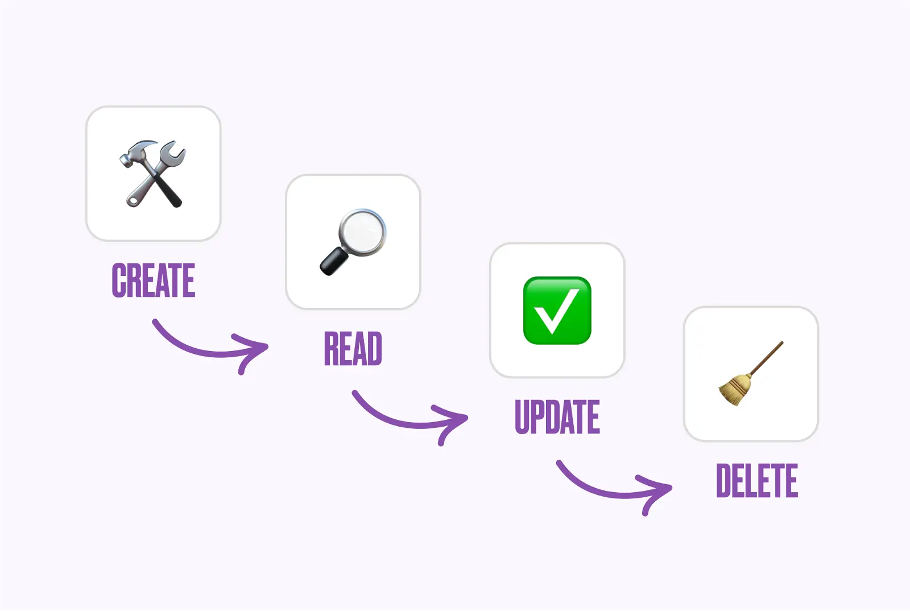
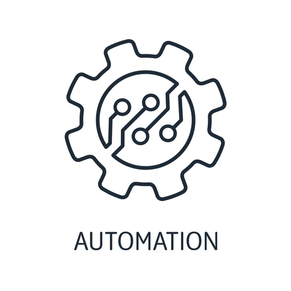
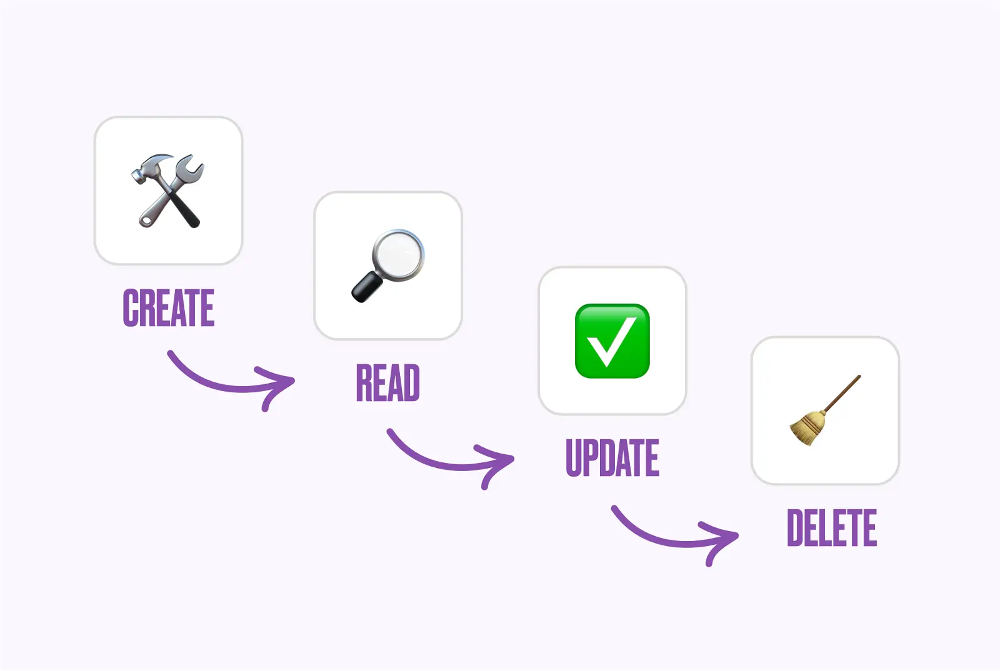
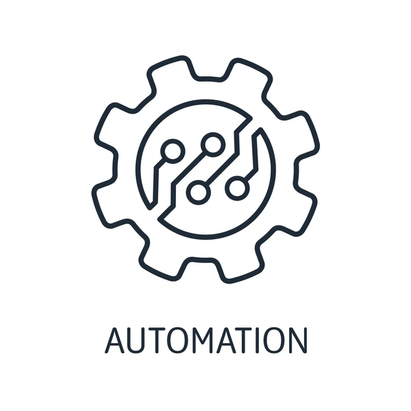
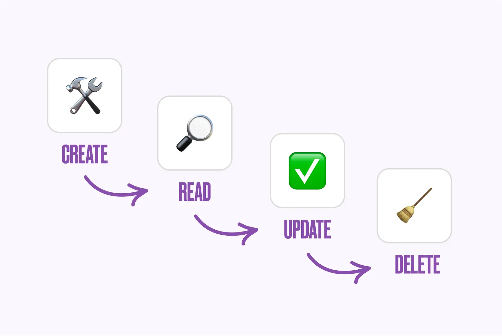
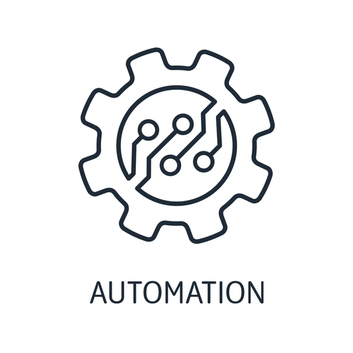

Intern
Money Trees
Back End Developer
Baguio City
September 2023 – November 2023
 




Money Trees
Back End Developer
Baguio City
September 2023 – November 2023


During my internship at Money Trees Company, I was part of the back-end development team where I utilized Laravel and Python to automate tasks, significantly improving team efficiency. I developed a CRUD system using Laravel, preceded by task automation with Python, and managed MySQL databases for efficient data storage and retrieval. Additionally, I served as the back-end developer for "KLINAPP," a mobile application project which served as our capstone project, integrating Firebase services including Realtime Database, Authentication, Storage, and Messaging. I designed role-specific interfaces for admin, cleaner, and client users, contributing to the project's success and enhancing user experience